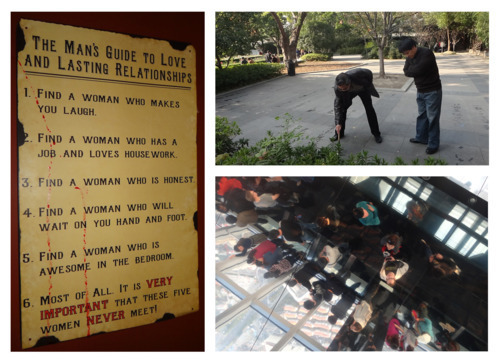

For some inexplicable reasons I always drawn toward stories of failures, misunderstood heroes, and the underdogs. Call it whatever you like but winning stories are dull. They are less inspiring as it only tells you victorious moments. And frankly, there’s only so much you can learn from success stories. Tragic heroes always sounds better.
Steve Jobs’ saga would’ve been just an ordinary success story had he never been fired and ousted from the company he started. Robert Downey Jr. would’ve been just another failed Hollywood actor had it not for his climb back to fame. His was probably the biggest come-back story Hollywood ever had. And frankly, they made much better story than simply records of triumphs.
And who can tells stories better than advertisers? They’re selling bullshit for a living. And was it a little wonder that they edit their narrative in telling their most important moments to focus on chronological victories after victories? I want to hear struggle. I want to hear what wasn’t said. I want to hear what their silent means.
Prof. Slocum always had a way to challenge our thinking approach with his somewhat rather quirky assignment that usually seems easy at first pass. I was off. And I found this challenging as I was rarely wrong (haha!). I must admit that I’m not good at reading people. However living in country like China made me learnt how to listen. And boy, was that hard or what.

This was why the Research Work session was particularly insightful, and definitely relevant for our thesis. Interviewing people is not easy. Not just because coming up with ‘intelligent’ question is hard, but getting past the superficial layer and connect with your subject… now that’s a challenge.
Several key takeaways that I found useful when doing research work (interview) were:
- Be aware of a narrative that exclusively focus on triumphs only. Find out what past obstacles, failures, struggles they committed and how they came back from it.
- Disrupt their narrative. What were their shortcomings, their fall from grace, get past the barrier of 'nicely’ construct narrative.
- Look for body language cue and use moment(s) of pause to ask about past failures. Seek for an opening. And let the silence do the heavy lifting.
–
*Photos:
(left) taken @Boxing Cat Brewery, Sinan Mansion, Shanghai
(top right) water calligraphy @Fuxing Park, Shanghai
(bottom right) view from SWFC a.k.a. the bottle opener tower